2019–2021
Master JMIN
École Nationale des Jeux et des Médias Interactifs et Numériques (ENJMIN)
En spécialité programmation, j'ai enrichi mon savoir dans ce domaine et amélioré mon travail d'équipe avec tous les corps de métier.
J'ai 28 ans et je travaille dans le domaine des jeux vidéo depuis plus de 5 ans. Passionné par la création de jeux, j'aime donner vie à des univers interactifs et procurer des sensations inoubliables aux joueurs. C'est pourquoi je m'améliore continuellement dans ma vie professionnelle grâce à mes projets personnels et ma curiosité.
I'm 28 years old and I've been working in the video game industry for over 5 years. I studied at ENJMIN in Angoulême and specialise in gameplay and visual effects programming (shaders, post-process, VFX…). These years of study have allowed me to realise various projects that you'll discover below.
En spécialité programmation, j'ai enrichi mon savoir dans ce domaine et amélioré mon travail d'équipe avec tous les corps de métier.
Ce double diplôme m'a beaucoup appris sur la création de jeux vidéo.
Ce diplôme m'a enseigné les bases nécessaires que j'ai su approfondir au fil du temps.
Ce jeu de gestion m'a familiarisé avec des systèmes plus complexes ; j'utilise aussi les nouveaux outils que propose Unity tels que UI Toolkit.
Il s'agit d'un jeu multijoueur à la 3e personne réalisé sur Unreal avec un ECS (flecs). J'ai pu découvrir la programmation online, le Gameplay Ability System d'Unreal et approfondir mes connaissances en C++.
En tant que programmeur gameplay, j'ai réalisé les 3C du jeu et de nombreux autres systèmes en ECS.
J'ai effectué des prototypes et des recherches afin d'aider l'équipe de design à trouver les mécaniques du jeu.
J'ai réalisé un jeu dont le but était de tester la mémoire des joueurs selon la caméra utilisée.
J'ai développé un module d'ERP en JS/PHP en MVC. J'ai dû m'imprégner du code existant afin d'y intégrer le mien.
Specialising in programming, I deepened my technical knowledge and improved my teamwork with all game production disciplines.
This joint degree taught me a great deal about programming video games.
Two years in computer science to learn the fundamentals and then more advanced programming knowledge.
Two programmers developed the game; I also held the lead developer role.
I developed an ERP module in JS/PHP using the MVC pattern, learning the existing codebase before integrating my own contributions.
Teamwork, organisation, and rigour are skills I honed in this role.
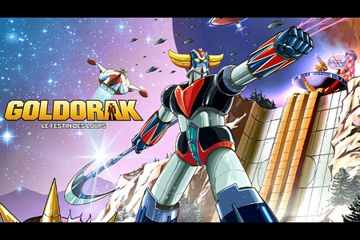
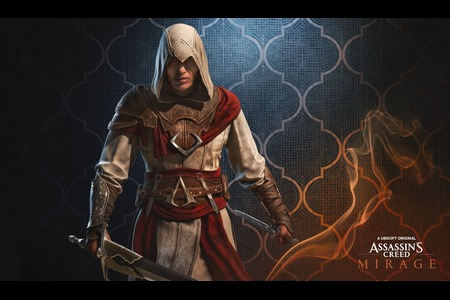
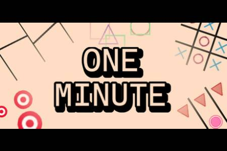
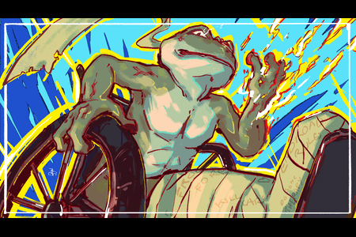
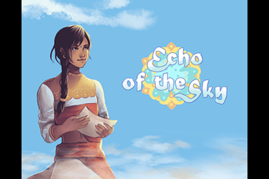
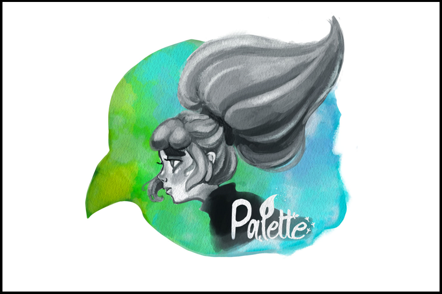
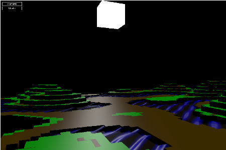
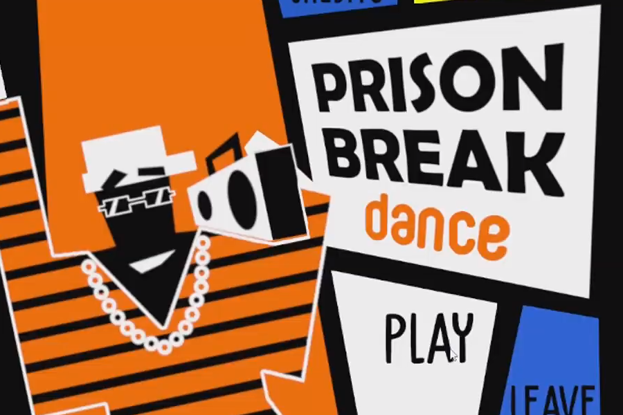
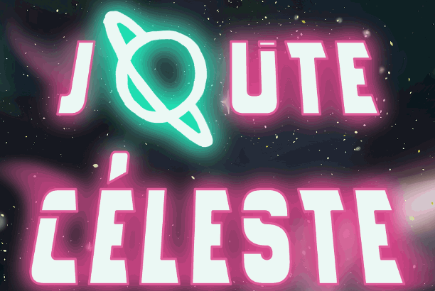
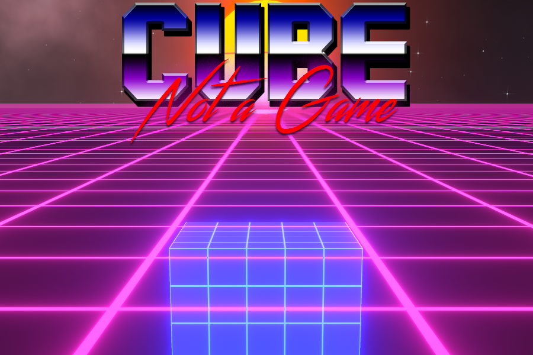
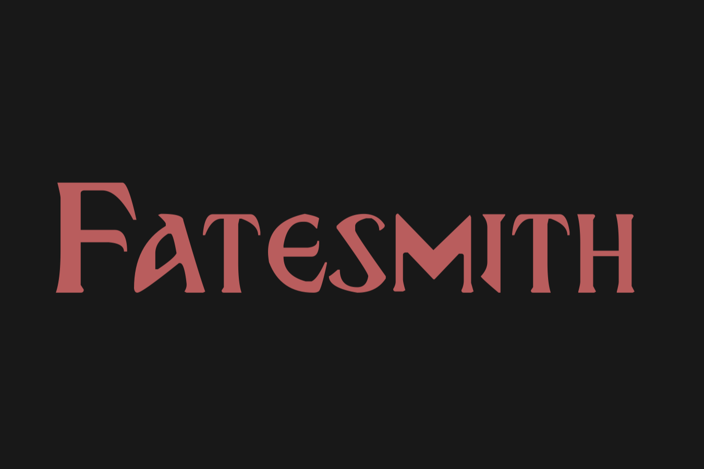
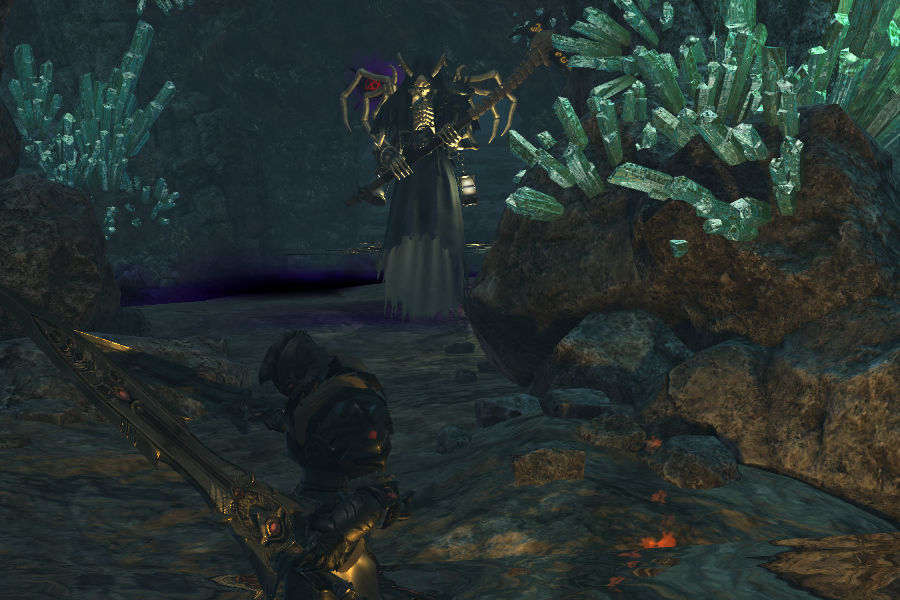
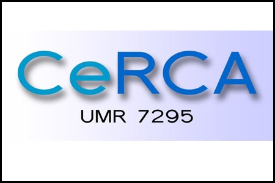
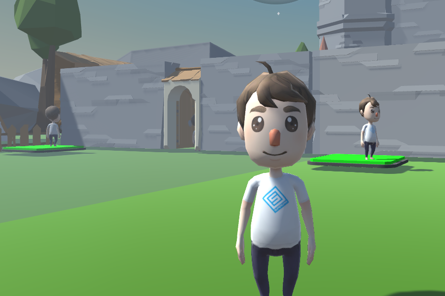
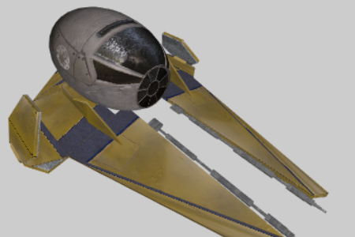
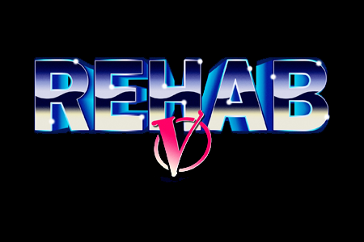
Je programme depuis plus de 8 ans. J'ai de solides bases et découvre chaque jour de nouveaux éléments pour améliorer mon code. Pour mener à bien mes projets, j'utilise mes acquis et recherche des méthodes pour que mon travail soit optimal et modulaire.
Depuis mes études au Québec, je programme des jeux. Je maîtrise Unity, Unreal et m'intéresse depuis peu à Godot. De nature curieuse, je recherche et découvre des algorithmes pour améliorer mon travail.
Grâce aux cours d'Infographie et d'Images par Ordinateur, j'ai découvert ma passion pour la programmation de shaders. Sur mes projets personnels, j'aime tester de nouveaux effets visuels.
Sur divers projets étudiants, j'ai pris le rôle de lead afin de veiller à la qualité et à la répartition du travail. Mes connaissances et mes conseils aident régulièrement l'équipe à résoudre les problèmes.
Mes cours et mon stage de DUT m'ont procuré les bases pour la création de sites. J'ai notamment créé une application web lors d'un stage en entreprise.